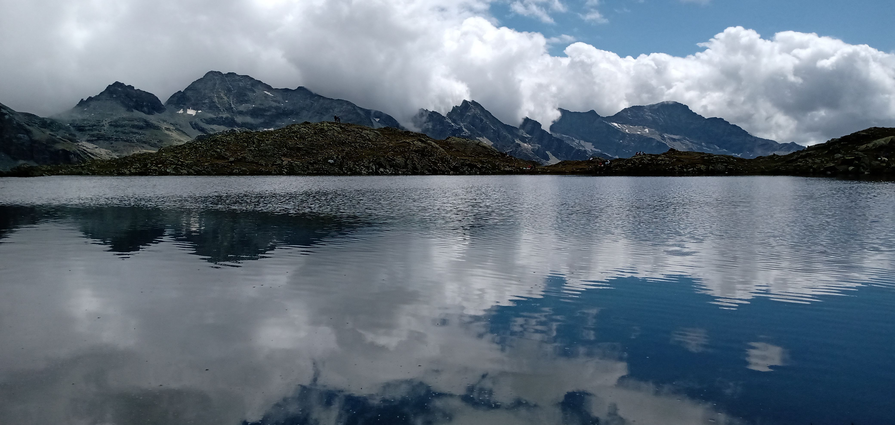

In questa sezione trovate una serie di approfondimenti che possono risultare utili per avvicinarsi con maggiore consapevolezza ad un’attività comunque complessa come quella escursionistica.
Qualora vi occorressero ulteriori chiarimenti potete liberamente contattarmi, sarò lieto di rendermi utile in tal senso!

Scala Difficoltà escursionistiche
Saper comprendere ciò che viene illustrato nei programmi delle varie uscite è fondamentale per valutare correttamente la propria idoneità fisica e tecnica e affrontare quindi con opportuna consapevolezza le escursioni a cui si intende partecipare.
Stabilire il grado di difficoltà di un percorso escursionistico secondo criteri univoci è piuttosto complicato, ciononostante il CAI ha adottato una scala di valutazione (vedi sotto) che suddivide gli itinerari escursionistici in 3 differenti gradi di difficoltà che sono stati determinati considerando i seguenti parametri oggettivi:
E - Escursionistico:itinerari che si svolgono quasi sempre su sentieri, oppure su tracce di passaggio in terreno vario (pascoli, detriti, pietraie), di solito con segnaletica adeguata. Possono svolgersi anche su pendii ripidi, e presentare facili passaggi su roccia, non esposti. Laddove siano presenti tratti esposti questi risultano in genere opportunamente protetti (barriere) o assicurati (cavi). Per questa tipologia di itinerari occorrono: capacità di orientamento, esperienza escursionistica e adeguato allenamento. Particolare attenzione va rivolta alle calzature e all’equipaggiamento che devono sempre risultare appropriati.
EE - per Escursionisti esperti:itinerari generalmente segnalati che tuttavia si sviluppano su terreni piuttosto accidentati e rocciosi (versanti ripidi, pietraie, creste, cenge) dove non sono da escludere pendenze sostenute e tratti esposti attrezzati (cavi e catene) che presentano lievi difficoltà tecniche senza tuttavia richiedere l’uso di specifica attrezzatura alpinistica (sono escluse le ferrate propriamente dette) Per questa tipologia di itinerari occorrono: buona esperienza escursionistica, capacità di orientamento, passo sicuro, assenza di vertigini, equipaggiamento e preparazione fisica adeguati.
Equipaggiamento
Nell’esercizio delle discipline outdoor dotarsi di un equipaggiamento adeguato rappresenta un’abitudine fondamentale per garantire un appropriato livello di sicurezza e comfort alle proprie esperienze anche in presenza di condizioni atmosferiche sfavorevoli.
Fortunatamente l’attività escursionistica non richiede l’impiego di attrezzature costose o complicate, occorre tuttavia prestare la massima attenzione nella scelta e nell’utilizzo di due elementi di particolare importanza: le calzature e lo zaino.
LE CALZATURE:
La scelta delle calzature è fondamentale poiché da essa dipende l’efficacia della nostra progressione. Esiste in commercio un’infinita varietà di prodotti pensati per l’escursionismo, che si dividono principalmente in due categorie: scarpe basse e scarponi (con cavigliera alta).
Per alcune tipologie di escursioni su terreni non accidentati può risultare accettabile anche l’utilizzo di scarpe basse, se tuttavia si alza il livello di difficoltà e si viaggia con uno zaino più pesante, occorre necessariamente adottare gli scarponi, che offrono maggiore protezione alla caviglia, stabilità e sostegno. Lo scarpone deve essere comodo, resistente ed affidabile, deve essere munito di suola in gomma scolpita (non usurata) e presentare una parte superiore traspirante ed impermeabile.
Per le attività di lunga durata è bene utilizzare scarponi già collaudati per non incorrere in fastidiosi inconvenienti (vesciche).
Attenzione alla giusta misura: in fase di acquisto è consigliabile provare gli scarponi con i calzettoni abituali e la sera (il piede è più gonfio); prendeteli di mezza taglia più grandi, la maggior parte dei produttori fornisce le mezze misure!
LO ZAINO:
Altro accessorio fondamentale è lo zaino.
Gli zaini possono essere molto diversi tra loro e si distinguono principalmente per la capacità di carico (volume) espressa in litri. Per un’escursione di un giorno è sufficiente uno zaino da 20/30 litri, per uscite di più giorni è necessario averne uno da almeno 40/60 litri ricordando sempre che il peso di uno zaino non dipende dal suo volume ma da come lo carichiamo. Scegliamo possibilmente un prodotto di qualità, realizzato con materiale robusto e dotato di una linea ergonomica con le giuste imbottiture per salvaguardare la schiena ed i punti di maggior contatto con il corpo. Molto importanti sono gli spallacci e le due cinture frontali, che devono essere a sgancio rapido e regolabili. Non trascurare poi l’areazione dello schienale, requisito fondamentale per tenere la schiena più asciutta possibile dal sudore.
Assicurarsi infine la presenza di un buon telo copri-zaino, robusto ed impermeabile, indispensabile per mantenere asciutto il nostro bagaglio anche in presenza di pioggia.
BAGAGLIO:
Una scrupolosa organizzazione del bagaglio risulta di fondamentale importanza per contenere lo sforzo fisico richiesto durante lo svolgimento delle nostre escursioni. L’obbiettivo di un corretto allestimento dello zaino consiste infatti nel limitare al massimo il peso trasportato sulle spalle considerando che questo non dovrebbe generalmente superare i seguenti valori:
ESCURSIONI GIORNALIERE:
Allenamento
Per affrontare un trekking in sicurezza e senza inconvenienti fisici, è fondamentale garantirsi una preparazione atletica adeguata.
Occorre sapere che, per un camminatore scarsamente allenato, un’escursione della durata di un’ora o con un dislivello di poco superiore ai 400 metri, risulta più che sufficiente a causare affaticamento e il dolore muscolare che si avverte il giorno successivo ne rappresenta l’inevitabile conseguenza.
Per raggiungere una forma fisica tale da affrontare con naturalezza escursioni di medio livello (4/5 ore di cammino) può essere sufficiente camminare regolarmente, due o tre volte alla settimana, alla velocità di 4-6 km/h in piano o su salite moderate, per almeno 30 minuti.
Se invece si desidera ottenere una buona condizione atletica in tempi abbastanza contenuti occorre seguire un programma di allenamento che alterni fasi di lavoro aerobico ad altre di lavoro anaerobico.
In questo senso il CAI suggerisce il seguente piano di allenamento che in circa due mesi è in grado di produrre risultati ottimali:
GIORNO 1
50 minuti di nuoto, prevedendo una velocità di circa 40 – 50 secondi per una vasca di 25 metri. Questa seduta è inoltre consigliabile il giorno successivo a quello di una lunga escursione
GIORNO 2
30 minuti di jogging seguiti da 30 minuti di ginnastica a corpo libero, con particolare riguardo ad esercizi di mobilizzazione ed elasticizzazione della colonna vertebrale (esercizi a carico naturale per rinforzare le strutture muscolari del cingolo scapolo-omerale)
GIORNO 3
30 minuti di jogging poi 30 minuti di mobilizzazione ed allungamento di tutti i distretti muscolari, ed esercizi di potenziamento degli arti inferiori seguiti infine da 15 minuti di marcia leggera
GIORNO 4
60 minuti di bicicletta
GIORNO 5
50 minuti di nuoto con il medesimo ritmo del giorno 1
GIORNO 6
escursione di almeno una giornata
Questo schema di lavoro potrà essere ripetuto nelle settimane successive, prolungando i tempi delle singole sedute o aumentando semplicemente la velocità di esecuzione.
Ogni settimana è comunque fondamentale prendersi almeno un’intera giornata di riposo.
I giorni di riposo sono infatti importanti quanto quelli di allenamento; attraverso l’esercizio fisico si stimola l’organismo che reagisce con la supercompensazione ma i principali processi di miglioramento e crescita muscolare avvengono proprio durante la fase di riposo!
CONSIGLI DURANTE L’ESCURSIONE:
Nel momento in cui si intraprende un’escursione risulta fondamentale iniziare gradualmente camminando prima in piano per alcuni minuti e dosando poi sforzo e ritmo in funzione dei cambi di pendenza in modo tale da procedere sempre con passo costante senza affaticare eccessivamente l’organismo.
L’andatura corretta da mantenere è quella che consente di conversare ancora normalmente ed è l’unica che permette di camminare per diverse ore senza determinare un’eccessiva produzione di acido lattico a livello muscolare.
Uno degli aspetti più importanti da considerare durante un’escursione è quello dell’idratazione.
Per ogni ora di camminata in salita è generalmente consigliato assumere una quantità di acqua compresa tra i 500 e 1000ml tenendo ovviamente in considerazione che questo fabbisogno varia considerevolmente in funzione della temperatura ambientale.
Nei mesi più caldi la sola acqua spesso non è sufficiente, con una sudorazione abbondante si perdono infatti anche preziosi sali minerali che devono essere prontamente reintegrati per assicurare una buona funzionalità muscolare.
Quella escursionistica è un’attività fisica particolarmente dispendiosa in termini energetici tanto che il consumo calorico di un’ora di camminata in salita si attesta mediamente tra le 400 e le 500 Kcal aumentando inoltre al diminuire della temperatura esterna.
Per affrontare un’escursione in modo appropriato occorre quindi garantirsi un’alimentazione in grado di liberare velocemente il proprio contenuto calorico.
Per quanto riguarda i pasti che si effettuano nel corso di un’escursione è consigliabile assumere carboidrati con indice glicemico medio, preferibilmente ben digeribili in modo da non affaticare eccessivamente l’organismo durante il processo digestivo.
Gli alimenti proteici sono anch’essi molto utili e possono quindi accompagnare i carboidrati durante il pasto.
Il mercato mette a disposizione un’infinta varietà di alimenti confezionati dedicati agli sportivi ma spesso risultano alquanto costosi e decisamente poco appetitosi rispetto alle alternative “tradizionali”, personalmente li sconsiglio!
Un’intramontabile e ottimo esempio di pasto da consumare durante lo svolgimento di un trekking rimane il classico “panino”, meglio se composto da pane ben lievitato, prosciutto magro o bresaola e un po' di formaggio (preferibilmente di tipo “grana”)
cliccando sul testo lampeggiante sottostante potete consultare un eccellente manuale, redatto da MOUNTAIN FITNESS, che illustra in modo approfondito le principali variabili coinvolte nel processo di allenamento in quota.
Cliccando sul link a lato potete consultare un eccellente manuale, redatto da MOUNTAIN FITNESS, che illustra in modo approfondito le principali variabili coinvolte nel processo di allenamento in quota.
MOUNTAIN FITNESS
è un progetto assolutamente innovativo che promuove la montagna come palestra di sport e fonte di salute e benessere…una filosofia che condivido al 100%
Info Mountain Fitness
Benefici dell'escursionismo
In una società sempre più stressata e quindi bisognosa di benessere psicofisico la montagna e la natura possono risultare di grande beneficio rappresentando una risorsa preziosa e gratuita alla portata di tutti!
È ormai assodata la funzione antistress esercitata dall’attività escursionistica nei confronti della quale non sussistono oltretutto controindicazioni per anziani, asmatici, diabetici o cardiopatici. Si tratta insomma di un’attività che fa bene a tutti e a tutte le età.
Camminando in salita si consumano fino a 10 volte più calorie rispetto a quando si cammina in pianura e questo rende l’escursionismo uno dei migliori strumenti per perdere peso e rimanere in forma!
Per chi lamenta problemi cardio respiratori, biomeccanici o altre patologie è consigliata una visita medica per stabilire il carico massimo di lavoro che l’organismo è in grado di sostenere. L’attività fisica abitualmente non è mai controindicata, migliorerà anzi il vostro stato di salute occorre soltanto praticarla con gradualità.
Per chi ha problemi di instabilità delle articolazioni della caviglia è consigliabile una fasciatura contenitiva per evitare distorsioni. Chi invece risulta in sovrappeso deve prestare particolare attenzione alla discesa usando scrupolosamente i bastoncini al fine di limitare l’affaticamento degli arti inferiori.

Meteorologia
Secondo il Soccorso Alpino il fattore meteo non rappresenta la principale causa diretta di incidenti in montagna ma costituisce uno degli elementi che più frequentemente concorre, indirettamente, nel determinarli. L’alta quota esaspera infatti le condizioni meteorologiche sfavorevoli esponendo l’escursionista ad una significativa serie di potenziali fattori di pericolo che è sempre opportuno conoscere in modo approfondito. Alcuni di questi fattori permangono talvolta per diverso tempo nonostante l’esaurimento dei fenomeni meteorologici che li hanno determinati e ogni valutazione dei rischi deve quindi considerare questa eventualità.
Per preparare al meglio un'escursione e scegliere l’attrezzattura più opportuna occorre pertanto controllare non solo le previsioni riguardanti il giorno prescelto per l’escursione ma anche gli eventi meteorologici verificatisi nei giorni precedenti il nostro arrivo.
Saper prevedere e interpretare correttamente le condizioni metereologiche, prima e durante l’escursione, rappresenta uno strumento fondamentale nella prevenzione degli incidenti in montagna e ogni buon escursionista dovrebbe quindi impegnarsi a provvedere in tal senso.
Cliccando sul link a lato potete consultare un eccellente manuale redatto dall’AINEVA che illustra in modo esauriente le principali caratteristiche meteorologiche riscontrabili sui nostri rilievi montuosi…
Manuale Meteorologia
Suggerimenti
Recensioni